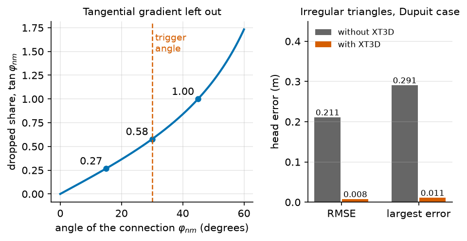
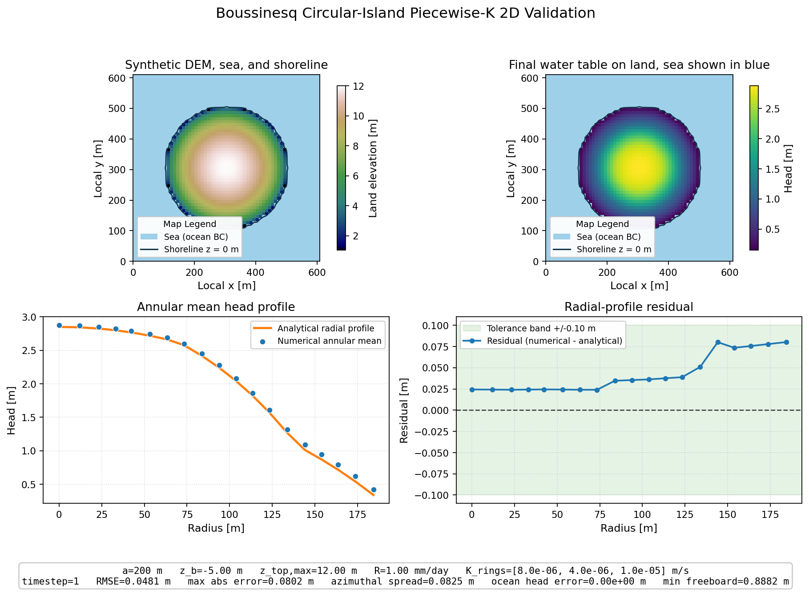
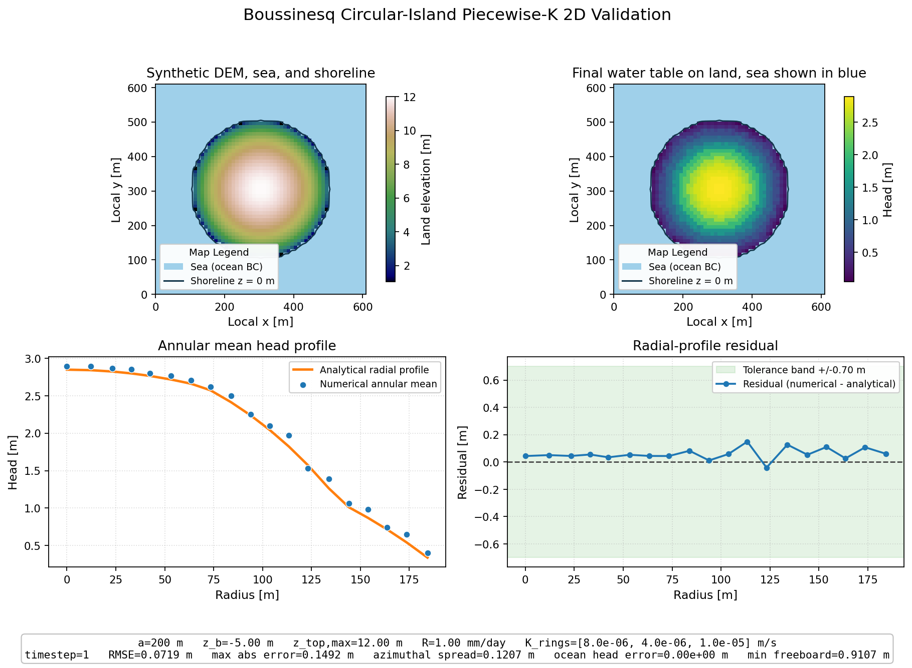

XT3D on irregular meshes#
The two-point flux of (17) is exact on a grid whose connections are perpendicular to the faces, for a conductivity that is the same in every horizontal direction. On irregular cells it is not. This page gives the error, the correction MODFLOW 6 offers for it, XT3D [Provost et al., 2017], and the rule HydroModPy follows to turn it on. The angle of a connection is defined on 4. Flow between two cells, and the angle.
Notation of this page
Symbol |
Meaning |
Unit |
Set by |
|---|---|---|---|
\(\mathbf{q}\) |
specific discharge (Darcy flux) |
m/s |
derived |
\(n, m\) |
cell indices; \(\mathcal{N}(n)\) is the set of cells that share a face with \(n\) |
the grid, The mesh |
|
\(G_{nm}\) |
conductance between cells \(n\) and \(m\) |
m²/s |
derived from \(K\), the geometry and the heads |
\(\mathbf{d}_{nm}\) |
vector from the centre of \(n\) to the centre of \(m\) |
m |
the grid |
\(\mathbf{n}_{nm}\) |
unit normal of the face shared by \(n\) and \(m\) |
the grid |
|
\(\mathbf{t}_{nm}\) |
unit vector along the face shared by \(n\) and \(m\) |
the grid |
|
\(\varphi_{nm}\) |
non-orthogonality of a connection, the angle between \(\mathbf{d}_{nm}\) and \(\mathbf{n}_{nm}\) |
degree |
derived |
The error of the two-point flux#
The flux through the face shared by cells \(n\) and \(m\) is the component of the Darcy flux along the normal of the face, \(\mathbf{n}_{nm}\cdot\mathbf{q} = -K\,\mathbf{n}_{nm}\cdot\nabla h\) for an isotropic conductivity. Write the unit vector of the connection, \(\hat{\mathbf d}_{nm} = \mathbf{d}_{nm} / \lVert\mathbf{d}_{nm}\rVert\), as \(\cos\varphi_{nm}\,\mathbf{n}_{nm} + \sin\varphi_{nm}\,\mathbf{t}_{nm}\), with \(\mathbf{t}_{nm}\) the unit vector along the face. Then
The two heads \(h_n\) and \(h_m\) give the first term only. The two-point conductance \(G_{nm}\) keeps it and drops the second, the head gradient along the face times \(\tan\varphi_{nm}\): zero on an orthogonal connection, 0.27 of the tangential gradient at 15 degrees, 0.58 at 30 degrees, 1 at 45 degrees. A conductivity that differs between two horizontal directions, or whose axes are turned, adds a term of the same kind, even on an orthogonal grid. The vertical \(K_z\) is aligned with the layers and needs no XT3D.
What XT3D computes#
XT3D writes the flux through each face with the full head gradient, estimated from the heads of both cells and of their neighbours, so the tangential term is in the balance [Provost et al., 2017]. The price is a wider stencil and a matrix that is no longer symmetric.
On the validation case dupuit_uniform_recharge_1d run on irregular triangles, the
golden reference of the regression test test_xt3d_irregular_tri_fast_regression records
a head RMSE of 0.211 m without XT3D and 0.0077 m with it, a factor of 27. The test fails
if the factor falls below 10 or the RMSE with XT3D rises above 0.016 m, twice the
measurement.

Fig. 37 Left: the share of the tangential gradient that the two-point flux drops, \(\tan\varphi_{nm}\) from (26), with the 30° angle of the rule below. Right: the head errors of the golden reference, read from the test folder at build time.#
When HydroModPy turns it on#
The code decides once per run, in this order:
Case |
XT3D |
Why |
|---|---|---|
|
as written |
your value wins; the code logs a warning when the checks below disagree |
Structured grid |
off |
the connections are orthogonal and the conductivity isotropic |
Horizontal conductivity anisotropic or turned |
on |
the tensor term of The error of the two-point flux |
More than 5 % of the connections above 30 degrees, or a 95th percentile of \(\varphi_{nm}\) above 30 degrees |
on |
the dropped term reaches 0.58 of the tangential gradient on a share of the faces |
Otherwise |
off |
the dropped term stays small, XT3D would add cost only |
The two limits are the constants _NONORTH_FRAC_GT30_TRIGGER and
_NONORTH_P95_TRIGGER_DEG. The anisotropy row does not fire today: the NPF package
receives only a horizontal \(K\) and a vertical \(K_z\), so the horizontal plane is
isotropic. The default Voronoi dual of a Gmsh mesh is orthogonal by construction
(3. The Voronoi dual), so XT3D stays off there; the triangles kept as cells with
modflow6.sgrid.grid_dual are the usual case where it turns on.
When XT3D is on, a SIMPLE IMS preset is promoted to COMPLEX, because SIMPLE
assumes a symmetric matrix (The solution: Newton and IMS).
The same case on two grids#
The circular-island validation case on a structured DIS grid (left) and on irregular
triangles (right), where the rule above turns XT3D on. Drag the handle to compare.


Structured DISIrregular triangles, XT3D onAssumptions#
The conductivity is isotropic in the horizontal plane:
NPFreceives only a horizontal \(K\) and a vertical \(K_z\).The angle of a connection is measured in the plan; the layers are an extrusion, so the vertical connections are orthogonal.
Limits#
MODFLOW 6 only. MODFLOW-NWT runs on structured grids only. The Boussinesq solver has no correction for skewed cells.
No horizontal anisotropy input. The anisotropy branch of the rule never fires.
Cost. XT3D widens the stencil and makes the matrix non-symmetric. On a mesh near the trigger, a sweep of many runs pays for it on every run.
Parameters of this page#
Checked by#
3 test files import hydromodpy.solver.modflow6.builders.solver_options, hydromodpy.spatial.mesh.ops.mesh_orthogonality. Their names say what they check.
unit: 3
- Ragged consumers. mesh
- Modflow6 robustness. solver
- Xt3d advisor. solver
In the code#
What |
Where |
|---|---|
The rule, its constants |
|
The angle of each connection |
|
The IMS promotion |
|
The regression with and without XT3D |
|
See also#
The mesh: the cells, the Voronoi dual and the angle of a connection.
The solvers of the aquifer: the packages MODFLOW 6 writes.
[analysis.comparison]: compare a run with XT3D and one without.